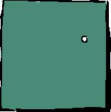
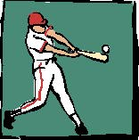
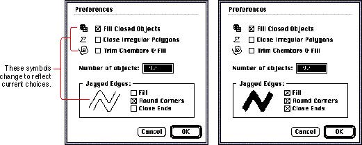

|
Limitations of IconsDesigning the right icon that conveys your message to most people can be difficult. Sometimes it's difficult because icons need a context to provide successful communication. For example, what does the drawing shown in Figure 8-6 mean? It's a circle that could represent a wide variety of objects in the real world. From this figure, it's not clear what the image represents. This image could represent a circle tool, a degree symbol, a ball, or a planet. It could be as many round things as people could imagine. When it appears in context with another object, the meaning instantly becomes clear, as Figure 8-7 shows. Figure 8-7 Context clarifies the image  You can clearly see that in this context the circle is a baseball. This picture communicates an idea in a simple, graphic format. By adding the baseball player to the circle image, the context clarifies the meaning of the image. In general, you can represent most nouns (people, places, and things) quite simply and easily in an icon. For example, you can draw a small picture that looks like a file folder to be a folder icon. Actions are much harder to portray in icons. How would you represent a save operation with an icon? You can overcome this difficulty by representing an action with an icon in combination with text. In fact, icons with label text are always more effective than either text or icons in isolation. Figure 8-8 shows a dialog box that uses icons that change to reflect the choices the user makes. The icons and text together help the icons give the user an idea of what to expect. Figure 8-8 Icons with label text  Sometimes another interface element is more appropriate than an icon that isn't clear. For example, you could use text for error messages in dialog boxes more effectively than trying to communicate the same concept with symbols. Sometimes text is the simplest way to convey a concept, depending on the specific interface situation. |